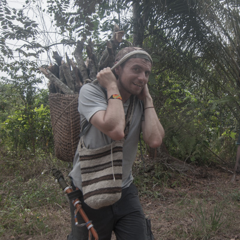

Perfil

Antropólogo de la Pontificia Universidad Javeriana (Bogotá, Colombia) y candidato a magíster en Geografía de la Universidad Nacional de Colombia. Su experiencia gira en torno de los escenarios y las redes que se tejen alrededor de la inclusión socioeconómica y la participación comunitaria en comunidades y organizaciones de la ciudad de Bogotá, departamento de Boyacá, Cauca y departamento del Guaviare. Tiene experiencia en producción de piezas audiovisuales, exposiciones de fotografía y creación de contenidos gráficos, así como el desarrollo de una metodología de formación para impartir talleres de liderazgo comunitario para crear, interpretar e incidir contextos sociales a través del arte y el audiovisual.